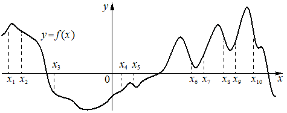

Opus100
Предварительные разборы, внешнего эталона нет.
На рисунке изображён график функции На оси абсцисс отмечено десять точек: Найдите количество отмеченных точек, в которых производная функции отрицательна.

{
"complete": true,
"included": true,
"exclusion_reasons": [],
"author_mode": "standalone_initial",
"author_path": "data\\annotation\\runs\\2026-11-07-fipi-team-bogdan108-051-150\\raw\\author\\FFE757.json",
"auditor_path": "data\\annotation\\runs\\2026-11-07-fipi-team-bogdan108-051-150\\raw\\auditor\\FFE757.json",
"feedback_ref": null,
"source_run": "data/annotation/runs/2026-11-07-fipi-team-bogdan108-051-150"
}{
"task_id": "FFE757",
"solution_status": "solved",
"answer": "5",
"steps": [
{
"id": "s1",
"action": "Для каждой отмеченной точки определить по графику, возрастает или убывает функция в её окрестности",
"result": "Убывает в x2, x3, x5, x8, x10; возрастает в x1, x4, x7, x9; x6 визуально у дна локального минимума, отнесена к невозрастанию без убывания",
"kc_ids": [
"kc1"
],
"input_refs": [
"condition"
]
},
{
"id": "s2",
"action": "Перейти от убывания функции к знаку производной и подсчитать точки с f'(x)<0",
"result": "f'(x)<0 в x2, x3, x5, x8, x10 — 5 точек",
"kc_ids": [
"kc2"
],
"input_refs": [
"s1"
]
}
],
"kc_candidates": [
{
"id": "kc1",
"name": "Определить по графику характер монотонности функции в точке",
"description": "Вход: график функции и отмеченная точка оси абсцисс; операция: установить, возрастает или убывает функция в окрестности точки либо точка является экстремумом; граница: визуальное чтение графика без формулы."
},
{
"id": "kc2",
"name": "Связать знак производной с монотонностью функции",
"description": "Вход: характер монотонности дифференцируемой функции в точке; операция: заключить о знаке производной (убывание — отрицательна, возрастание — положительна, экстремум — ноль); граница: точки, где функция строго монотонна или имеет гладкий экстремум."
}
],
"methods": [
{
"id": "m1",
"name": "Знак производной по графику функции через монотонность",
"step_ids": [
"s1",
"s2"
]
}
],
"warnings": [
"Точки x5 и x6 расположены вблизи локальных минимумов; классификация по растровому рисунку визуальная: x5 отнесена к убыванию (левее дна), x6 — к точке минимума. При ином прочтении x6 ответ был бы 6."
]
}{
"task_id": "FFE757",
"catalog_version": "fipi50-editorial-v1-frozen",
"decisions": [
{
"local_kc_id": "kc1",
"status": "new_candidate",
"catalog_kc_id": null,
"evidence": [
{
"ref": "step:s1:action",
"quote": "Для каждой отмеченной точки определить по графику, возрастает или убывает функция в её окрестности"
},
{
"ref": "image:assets/b5eab688d386f18041d7e542.png",
"region_description": "График y=f(x) с десятью пунктирными отметками x1..x10 на оси абсцисс; x2, x3, x5, x8, x10 лежат на нисходящих участках, x1, x4, x7, x9 на восходящих, x6 у дна локального минимума"
}
],
"context_refs": [
"condition"
],
"alternatives_checked": [
{
"catalog_kc_id": "graph_coordinates",
"reason": "Считывание координат точек по сетке, а не характера монотонности в окрестности"
},
{
"catalog_kc_id": "literal_9aee0783618d",
"reason": "Чтение знака по графику производной, а здесь дан график самой функции"
},
{
"catalog_kc_id": "derivative_monotonicity",
"reason": "Вывод монотонности из знака производной, а не визуальное чтение графика функции"
}
],
"rationale": "Операция — визуально классифицировать каждую отмеченную точку графика функции как лежащую на участке возрастания, убывания или в экстремуме. Подходящего узла в каталоге нет.",
"proposal": {
"name": "Определять по графику функции монотонность в отмеченной точке",
"definition": "По изображению графика y=f(x) установить, лежит ли отмеченная абсцисса на участке возрастания, убывания или в точке экстремума; без формулы функции."
},
"blocking": false,
"issue_ids": [
"i1"
]
},
{
"local_kc_id": "kc2",
"status": "new_candidate",
"catalog_kc_id": null,
"evidence": [
{
"ref": "step:s2:action",
"quote": "Перейти от убывания функции к знаку производной и подсчитать точки с f'(x)<0"
},
{
"ref": "step:s2:result",
"quote": "f'(x)<0 в x2, x3, x5, x8, x10 — 5 точек"
}
],
"context_refs": [
"step:s1:result"
],
"alternatives_checked": [
{
"catalog_kc_id": "derivative_monotonicity",
"reason": "Обратное направление: узел выводит монотонность из знака производной, здесь знак производной выводится из монотонности по графику"
},
{
"catalog_kc_id": "literal_9aee0783618d",
"reason": "Знак производной читается по графику производной, а не выводится из поведения функции"
},
{
"catalog_kc_id": "literal_6ad8f502588e",
"reason": "Подсчёт точек по принадлежности промежутку, а не по знаку производной; подсчёт здесь тривиален"
}
],
"rationale": "Действие — переход от наблюдаемого убывания/возрастания дифференцируемой функции в точке к знаку производной (убывание на окрестности даёт f'≤0; строгий знак принимается по форме графика вне экстремумов) и подсчёт. Каталожный узел derivative_monotonicity покрывает обратную импликацию, поэтому match не ставится.",
"proposal": {
"name": "Определять знак производной по монотонности функции",
"definition": "По установленному характеру монотонности дифференцируемой функции в окрестности точки заключить о знаке производной (строгое убывание вне экстремума — отрицательна, возрастание — положительна, гладкий экстремум — ноль)."
},
"blocking": false,
"issue_ids": []
}
],
"issues": [
{
"id": "i1",
"kind": "boundary",
"refs": [
"step:s1:result",
"image:assets/b5eab688d386f18041d7e542.png"
],
"description": "Классификация x5 и x6 у локальных минимумов визуальная. По рисунку x6 совпадает с дном впадины (f'=0), x5 немного левее малого минимума на нисходящем участке; прочтение автора согласуется с рисунком, ответ 5 правдоподобен, но опирается на растровую точность.",
"blocking": false,
"affected_local_kc_ids": [
"kc1"
]
}
],
"review_scope": "KC mapping with incidental mathematical checks; not expert validation"
}[]
{
"included": true,
"exclusion_reasons": [],
"source_policy_included": true,
"source_policy_exclusion_reasons": []
}